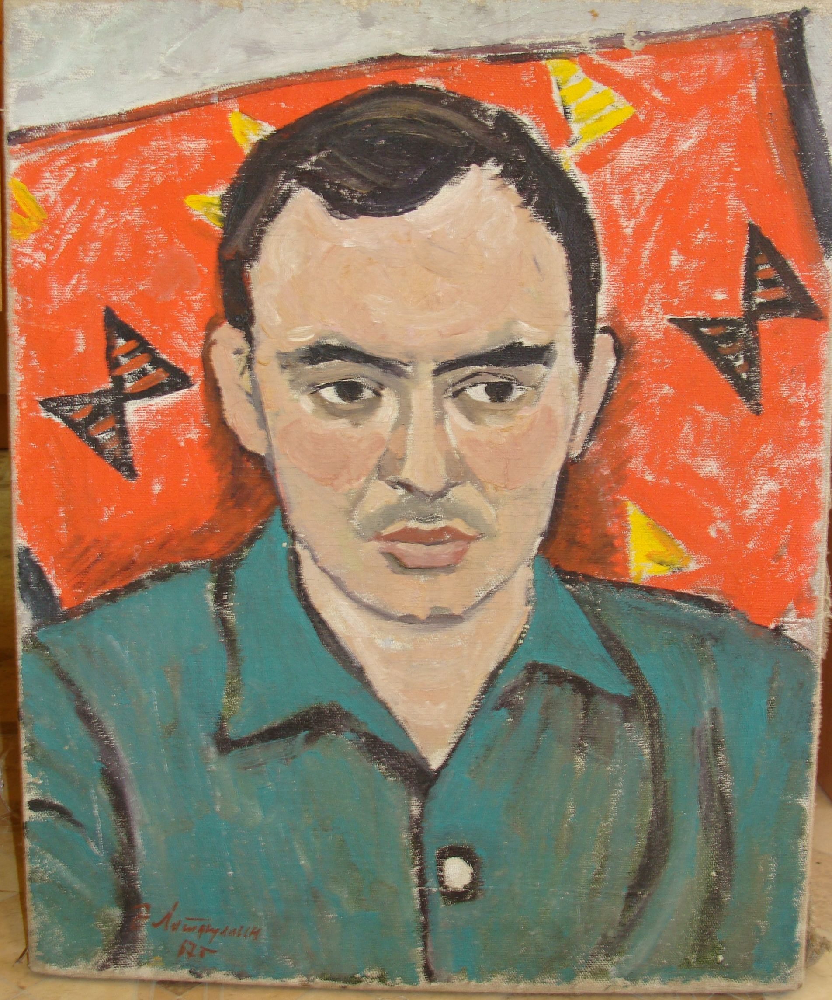
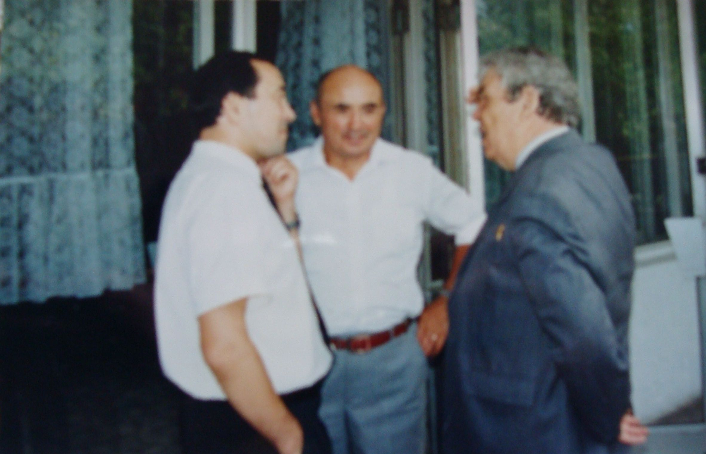
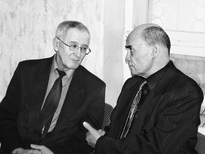
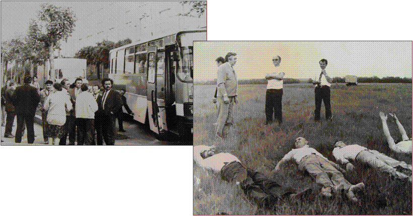

ПОСВЯЩЕНИЯ Газиму Шафикову
ПОСВЯЩЕНИЯ

Портрет Газима Шафикова работы А. Лутфуллина

Мустай Карим (после авторского вечера Г. Шафикова)
Газим Шафиков – причина того, что сегодня наши заблудшие души соединились.
Газим, ты у всех на виду. Как подобает настоящему поэту и гражданину.
Дай Бог, чтобы ты еще долго заставлял нас думать, размышлять, иногда сомневаться, иногда каяться…

Георгий Кацерик
…Только теперь, читая и перечитывая «Избранное», до выхода которого поэт так и не дотянул, я начинаю понимать, что Газим Шафиков и впрямь был неким избранником Поэзии. Исключительно своеобразным и прекрасным, просто изумительным поэтом, какому наверняка при рождении медоносные пчелы вложили в рот сладчайшие медовые соты...

Равиль Бикбаев
ГАЗИМУ ШАФИКОВУ
«Рожденные в седле»
Путь пройденный обозревая, все же
Мужчина загрустит, и не со зла,
А яростью на сокола похожий,
И тот однажды да сойдет с седла.
Проходит жизнь, кровь сердца источая,
Летят года – попробуй, уследи!
Они как будто время выбирают,
Чтоб сбить с седла нас в праведном пути.
Суставы наши не из шелка, чтобы
Дрожать от ветра. На родной земле
Незыблемо стоим в грозу и штормы –
Ведь мы из тех, что рождены в седле.
Всю жизнь глотали мы огонь и воду
Такую, чтоб кипела в венах кровь.
Хребты Урала – волшебство природы –
Нас ждут и будоражат вновь и вновь!
Ирек Киньябулатов
ЛИШЬ В НЕМ ОДНОМ…
Как тянет он один тот груз,
Что не под силу и десятку,
Заранье зная наизусть:
В пути ему не будет сладко.
Как говорит он, не страшась,
О том, что не под силу прочим?
Глядишь: уж возгорелся враз
И вновь энергией клокочет.
В нем средоточье чувств и слов,
Подобным пулям бронебойным.
В нем – лики множества сынов
Земли родной слились достойно.
Суставы силой налиты,
Все то, что сотворит он – свято.
Невольно, вздрогнув, вспомнишь ты
Мужей, подобных Салавату.
Его предвиденья сродни
Пророчеству – в том божья милость.
Напомнят зоркость Валиди
И взор его, и прозорливость.
Любое слово – что стрела,
Любое дело не обуза.
Видать вперед его вела
Лампада бабичесвской музы.
Вдруг начинает, воспылав,
Вершить оставленные кем-то
Незавершенные дела
И завершит их непременно.
В себя вобрал он море слов.
Никем не сказанные прежде.
Он весь – основа из основ
И в устремленье, и в надежде.
Нашел ответ я. Как на грех,
Он прост – мои прошепчут губы:
Да ведь сегодня больше всех
Он свой народ и землю любит!
Ирек Киньябулатов
Верен ты себе и слову сердца,
Верен даже нелюбви своей.
(Постоянство ненависти с верой
Ограждает от беды твоей.)
Верен ты любви, и в дружбе – первый;
Больше клятв ты верен Правоте.
Потому-то люди тебе верят,
Как орлы – небесной высоте
Верность без решимости – пустое
Слово. Верность – это боль твоя и кровь.
Не боишься низвергать устои,
Коль из них давно ушла любовь.
Верен ты дорогам нашим предков –
По следам их твой несется конь.
Потому и по врагам бьешь метко,
Влезть готовый в воду и огонь.
Ты от тех дорог находишь силу.
Их судьба – судьба твоя и плоть.
Сердце твое столько пропустило
Сквозь себя – не приведи Господь!
А борьба все продолжается. И злобы
Столько, что непросто устоять.
Но в седле по-прежнему ты – чтобы
За народ и биться, и страдать!
Айдар Хусаинов
На смерть Газима Шафикова
Зазвени, мой курай,
На горе той Урал,
Гнев обрушь на жестокую зиму,
Что в столице Уфе,
На наспетой строфе,
Оборвалась судьбина Газима.
Сколько пел и рыдал,
Душу песне отдал,
Но осталась она не допета.
Вот такая судьба,
Как четыре горба,
Перево-драматурго-поэта.
А какой публицист!
Ты пронзительный свист
Затяни, мой курай,словно очерк.
На страницах его
Встал Валидов живой,
Отменив запретительный прочерк.
Хадии круговерть,
И Муртазина смерть,
И бессмертье Урала - батыра-
Все вместила в себя
Роковая судьба,
Что еще до конца не остыла.
Был киргизом рожден,
Был Баймаком спасен,
Он в родные края воротился.
Средь бессонных ночей
Он - и свой, и ничей-
Над бумагой, как факел, светился.
Тот огонь, что горел,
Изнутри его ел,
Он зовется любовью к народу.
Пусть проходят года,
Не умрет никогда,
Хоть пиши миллионную оду.
Словно ось в колесе,
Как известный сэсэн,
Он давно у людей на примете,
И родной его край,
Словно птица Хумай,
Зарыдал, услыхавши о смерти.
Пусть на лицах печаль,
Песня будет звучать,
Нет на свете бессмертья иного!
Так прощай же, Газим,
Я зайду в магазин
И возьму, как любил ты, сухого.
28 января, Уфа, 8-я больница.